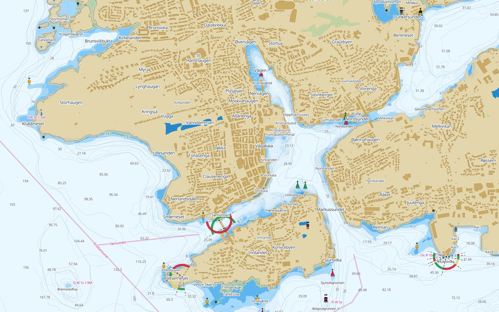

Havna har Grieg Connect. Resten av anløpet har e-post.
Hvordan de to kan leve sammen om det samme anløpet, og 23 spørsmål til dere som bruker systemet hver dag.

Hvordan de to kan leve sammen om det samme anløpet, og 23 spørsmål til dere som bruker systemet hver dag.